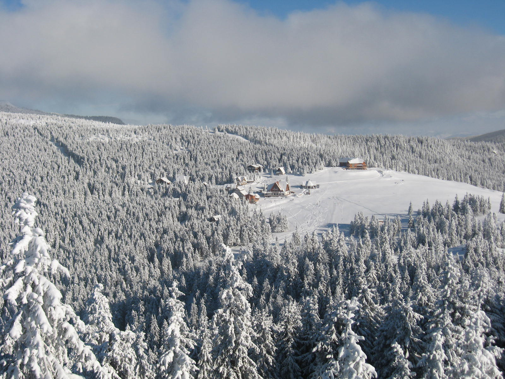
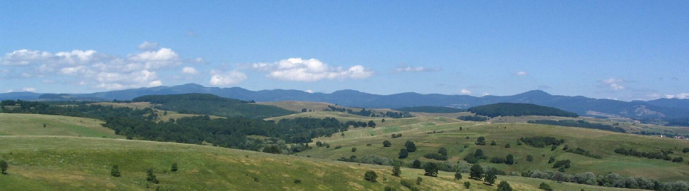
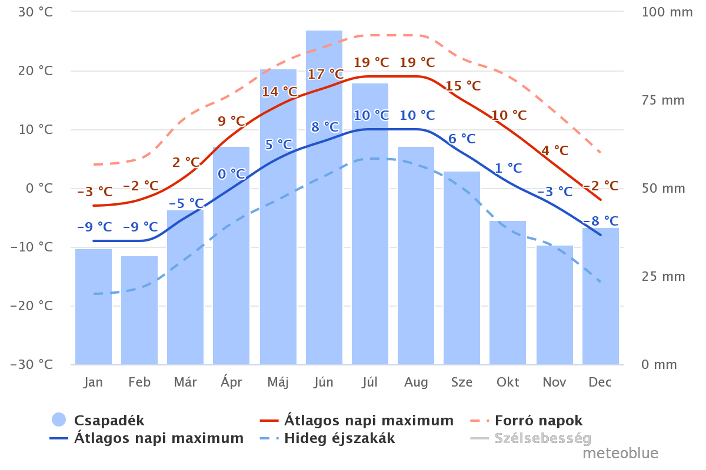

Hargita
A Hargita (románul: Munții Harghita) vulkáni hegyvonulat a Keleti-Kárpátokban. Határai északon a Libán-tető, keleten a Csíki-medence, délkeleten a Torjai-hágó, délen a Hatod-hágó, nyugaton a Görgény-Hargita-fennsík. A Hargita a Keleti-Kárpátok vulkáni vonulatának (Kelemen-Görgény-Hargita) része. Északon, a Libán-tetőnél kapcsolódik a Görgényi-havasokhoz, délen, a Hatod-hágónál a Baróti-hegységhez, a Torjai-hágónál pedig a Bodoki-hegységhez. A hegység hossza a gerincvonalon 70 km, szélessége 20–25 km. Három részre tagolódik: Északi-Hargita, Központi-Hargita és Déli-Hargita.
Észak-Hargita
A Hargita-hegység északi része az 1000 m magas Libán-tetőtől az 1310 m magasan fekvő Fertő-nyeregig tart. Ezen a részen is vulkáni kúpokkal, lávafolyások által létrehozott sziklagerincekkel találkozunk, viszont itt ezek kevésbé látványosak, hiszen régebbiek, mint a Központi-Hargita vagy a Dél-Hargita hasonló képződményei. Az első vulkáni építmény a Csíkmagasa (1153 m), mely egy dagadókúp maradványa. Itt kráter nem is létezett. Az Osztoros-kúp talpi átmérője 8 km, itt már kirajzolódik a hajdani kráterperem is, melyet az Osztoros (1386 m), Veres-bükk (1336 m) és Vigyázó-kő (1368 m) csúcsok jelölnek. Ezt a krátert a keleti oldalon csapolta le a Lok-patak. A nyugati, külső lejtőjén jött létre az Ördög-tó nevű havasi tőzegláp, melyet a Hosszú-kő (1252 m) és a Csicsaj köve (1222 m) határol nyugatról.
Az Észak-Hargita fontosabb hegyei északról délre: Gréces-tető (1128 m), Csík magasa (1152 m), Ölyves-tető (1373 m), Ostoros (1386 m), Vigyázó-kő (1374 m), Fertő-tető (1589 m)
Központi-Hargita
A Fertő-nyereg és a Tolvajos-hágó (985 m) között elterülő Központi-Hargitában találhatók a hegység legmagasabb csúcsai. Az 1,7 kilométert is meghaladó hegyek egy hatalmas sztratovulkáni kráter maradványai. Ez a legnagyobb vulkáni hegycsoport a környéken. A félkör alakú kráterperem hegyei: Mihály-havas (1685 m), Madarasi-Hargita (1801 m), Rákosi-Hargita (1758 m), Madéfalvi-Hargita (1710 m) és Csicsói-Hargita (1755 m). A Madarasi-Hargitán van a hegység legnagyobb menedékháza amely még 1941-ben épült a magyar kormány támogatásával. A Csicsói-Hargita déli oldalában, 1300–1400 m magasságban található Hargitafürdő, Hargita megye legmagasabban fekvő emberi települése. A hargitafürdői mofetták, gőzlők és a peremvidéken gyakori vasas, magnéziumos, erősen szénsavas ásványvíz-források az erőteljes vulkáni utóműködésről tanuskodnak.
A Központi-Hargita fontosabb hegyei északról délre: Nagy-Madaras (1503 m), Madarasi-Hargita (1801 m), Rákosi-Hargita (1756 m), Mihály havasa (1685 m), Hegyes-kő (1571 m), Madéfalvi-Hargita (1709 m), Csicsói-Hargita (1755 m), Széles vésze (1483 m), Bor hegyese (1379 m).
Madarasi-Hargita
A Madarasi-Hargita (románul: Harghita-Mădăraș) a Hargita-hegység és Székelyföld legmagasabb hegycsúcsa, egy egykori rétegvulkáni kráter peremének északi maradványa. A nehezen felismerhető kráterperem többi hegycsúcsa az Oltárkő (1358 m), a Rákosi-Hargita (1755 m), a Madéfalvi-Hargita (1709 m) és a Csicsói-Hargita (1756 m). Ezek alkotják a Keleti-Kárpátok egyik legnagyobb vulkáni maradványát.
Az egykori kráter szélessége 5 km. A déli oldalból ered a Hargita leghosszabb folyóvize, a Vargyas-patak. A Madarasi-Hargita régi elnevezései: Galusz-tető, Nagy-Hargita, Havas, Nagy-havas, Nagyerdő. A Madarasi-Hargitát először Tófalvi Péter kezdte 1998 után a „székelyek szent hegye”-ként emlegetni. Azóta ez lassan kezd beivódni a köztudatba.

Déli-Hargita
A Déli-Hargita (régebbi nevén Hermányi-hegység) Hargita megye és Kovászna megye határán helyezkedik el, a Tolvajos-hágó és a Hatod-hágó között. A Tolvajos-hágótól délre helyezkedik el Erdély legnagyobb fellápja, a Lúcs-tőzegláp, amelynek felülete 3 x 4 km, és amelyet a Kormos-patak csapol le. A Déli-Hargita egyetlen hegyi üdülőtelepe az 1250 m-en fekvő Csíkszentimrei Büdösfürdő borvíz-forrásokkal és mofettákkal. Itt találhatók a Hargita legerősebb (99% szén-dioxidot tartalmazó) gázömlései. Az ide vezető rossz út miatt kevés turista, főleg helyiek látogatják.
A Büdösfürdőtől délre van a Déli-Hargita legmagasabb hegyeit, köztük a Kakukk-hegyet (1558 m) magába foglaló vulkáni maradvány. A Fekete-hegy (1368 m) déli lábánál, a Fenyős-patak völgyében található a nemrég újjáépített bodvaji vashámor. A Nagy-Piliskénél (1374 m) a Déli-Hargita két felé ágazik. A Hatod-hágó felé találjuk a Nagy-Murgót, amely a Keleti-Kárpátok vulkáni vonulatának legdélebbi tagja. A Déli-Hargitához sorolható az Olton átnyúló Csomád-hegység, amelynek az épen maradt kettős kráterében található a Szent Anna-tó és a Mohos-tőzegláp.

A Déli-Hargita fontosabb hegyei északról délre: Talabor-hegy (1292 m), Nagy-Kő-bükk (1231 m), Gesztenye-szikla (1312 m), Kemence-tető (1193 m), Angyalka-tető (1458 m), Kakukk-hegy (1558 m), Aladár-tető (1370 m), Kapus (1423 m), Mitács (1280 m), Nagy-Piliske (1373 m), Nagy-Murgó (1016 m), Nagy-Csomád (1301 m).
Éghajlat
A felszálló légtömegek miatt aránylag kevés az évi napsütéses órák száma (1600 – 1900 óra). Derült időre nagyobb valószínűséggel számíthatunk január 20. – február 10. között és július 25. – november 10. között. A legmagasabb hegycsúcsokon az évi átlaghőmérséklet 2 °C. A leghidegebb hónap a január (−10 °C), a legmelegebb a június (8 °C) 1500 méternél magasabban. A fagyos napok szeptember végétől június elejéig tartanak, de néha nyáron is előfordulhatnak. A csapadékmennyiség a csúcsokon 1200 mm/év.

Forrás: meteoblue.com
Élővilág
Növényzet
Az erdők 1700-1740 méter magasságig terjednek. Ez alatt a fenyvesek az éghajlatnak megfelelően a hegység keleti oldalán 650 méterig ereszkednek le, a melegebb nyugati oldalon 1200 méterig. Bükkösök főleg a nyugati oldal alacsonyabb szintjein fordulnak elő.
Amint felérkezünk a Madarasi Hargitára, az aljban jellemző elegyes erdők birodalmából a fenyvesekbe csöppenünk. Innen mindössze 10-20 perc járással a csúcs irányába, már elérjük a fenyvesek felső határát, ezután az alpesi tájakra jellemző borókás következik. Tehát a mindössze 10 km-es szakaszon három növényzeti övet érintünk.
A Madarasi Hargita növényzet szempontjából az alhavasi (szubalpesi) növényzeti övbe tartozik. Az itt élő növények leggyakrabban a cserjék közül kerülnek ki. Ilyen például a törpe boróka (Juniperus nana), a fekete áfonya (Vaccinum myrtillus), a vörös áfonya (Vaccinum vitis-idaea) és a hamvas áfonya vagy Vaccinum áfonya (Vaccinum uliginosum).
Az uralkodó fafaj a lucfenyő (Picea abies), amely összefüggő, havasi erdőségeket alkot, de lehet csoportosan vagy éppen magányosan is.
Ahol ezekbe az erdőkbe behatol a fény, ott lágyszárú növényekkel is találkozhatunk, mint például a kék viragú , harangrojt (Soldanella montana), a sárga sziromlevelű ibolya (Viola biflora), a fecske tárnics (Gentiana asclepiadeae), a hegyi boglárka (Ranunculus montana), a szívlevelű nadálytő (Symphytum cordata), a fenyves csengettyűke (Campanula abietina), a piros mécsvirág (Melandryum rubrum) szép piros virágokkal, a barnás-vörös virágaival a bókoló patakmenti gyömbérgyökér (Geum rivale), ragadós enyvesszerű szárával, szép piros virágokkal az enyvecske (Viscaria vulgaris) és a szép hölgymál fajok (Hierarcium sp.) sárga színű fészkes virágzataikkal.
A lucfenyveseket helyenként alhavasi gyepek tarkítják, amelyeket többnyire a szőrfű (Nardus stricta), ritkábban a vörös csenkesz állományai alkotják.
Ha a csúcstól déli irányban leereszkedünk a lejtőn, miután áthaladunk egy lucfenyő csoportosuláson, egy nagyobb kiterjedésű tőzegmohaláphoz érünk. A tőzegmohaláp keletkezését és fejlődését a csapadékos, párás, hűvös, hegyvidéki éghajlat segítette elő.
Állatvilág
A lucfenyvesekben élő emlős állatok: a barna medve (Ursus arctos), nagytestű ragadozó állat, a kecses alakú gímszarvas (Cervus elaphus carpaticus), a ritka, rejtélyes hiúz (Linx linx), a farkas (Canis lupus), a vadmacska (Felis silvestris), a nyuszt (Martes martes), a mókus (Sciurus vulgaris), a róka (Vulpes vulpes) és a vaddisznó (Sus scropha).
A madarak közül előfordul a siketfajd (Tetrao uragallus), a császármadár (Tetrastes bonasia), a macskabagoly (Strix aluco aluco), az uhu (Bubo bubo), az egerészölyv (Buteo buteo), a fenyves cinege (Parus ater), keresztcsőrű (Loxia curvirostra), a fenyőszajkó (Nucifraga canyocatactes) és a hegyi cinege (Parus montanus).
A hüllők közül megtalálható az elevenszülő gyík (Lacerta vivipara). A kétéltűek közül az alpesi gőte (Triturus alpestris) és a kárpáti gőte (Triturus montadoni) él az itt előforduló pocsolyákban és lápokban. A gyors folyású hegyi patakokban él a sebes pisztráng (Salmo trutta fario), a botos kölönte (Cottus gobio), a fürge cselle (Phoxinus phoxinus) és a kövi csík (Nemachilus barbatulus).
A rovarok közül jelen vannak a betűző szú (Ips typographus), amely a fenyőfák fájában rágja járatait, az apácalepke (Limantria monacha) lárvája, amely tűlevelekkel táplálkozik, az óriás fenyődarázs (Sirex gigas) lárvája, amely alagutat rág a fában.